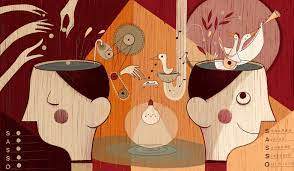

La grammatica della fantasia

In questo testo, per la prima volta, viene messo per iscritto il concetto di “binomio fantastico”, a l ungo utilizzato dall’autore nei suoi testi precedenti. Binomio fantastico è quella tecnica di scrittura che prevede l’unione di due parole slegate semanticamente, per esempio una zucchina e un bicchiere, per dare un input creativo nella nascita di una nuova storia.